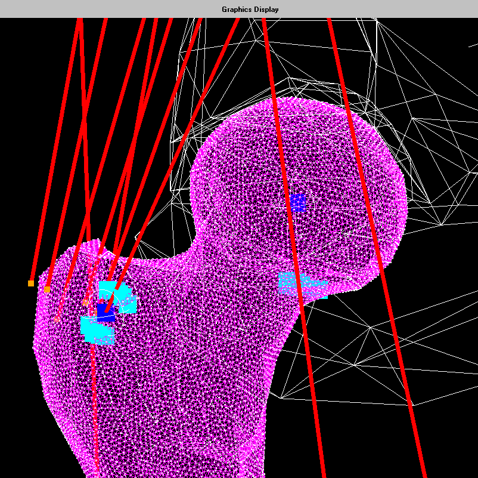
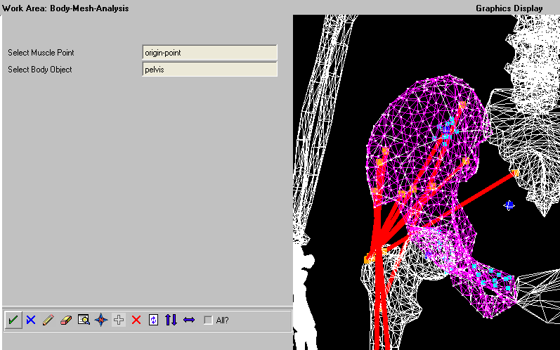

NTNU, spring semester 2016
Individual work
Master thesis, duration 6 months
There is a lot of potential for automation of engineering work associated with 3D modeling and analysis of this. The work done in this master's thesis was to develop a conceptual model of muscles and skeletons for future development, and to produce a framework for different simulations.
 